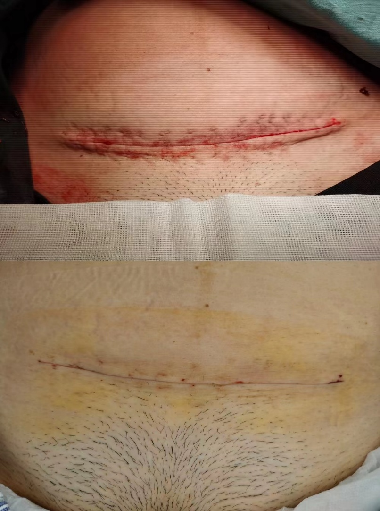
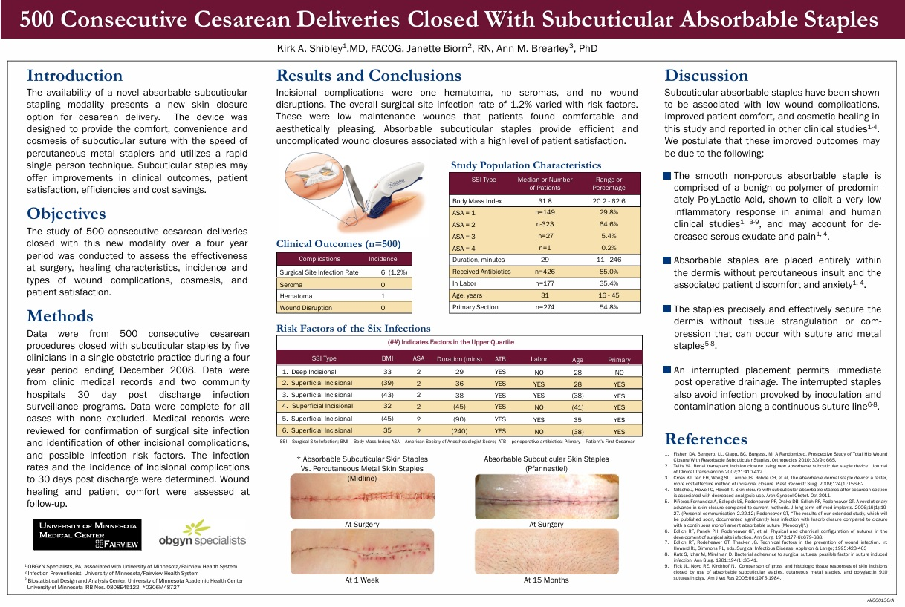

婦產科 · Benson · 2026.10.29
“嘉茵頤縫”
一次性可吸收釘皮內吻合器
剖腹產傷口閉合 · 更快 · 更美 · 更少感染
原教材 26 頁精煉為 12 頁互動版 · 內含 5 支原片影片
傳統縫線的三大痛點
感染風險
多股編織表面粗糙易附菌，真皮縫合切割組織致紅斑發炎
異物刺激小？不
外露縫線需拆線，二次傷害，病患疼痛與護理成本高
耗時費力
長傷口逐針縫合耗時長，延長手術時間， total 21cm 需 30 針級工作量
→ 可吸收釘：光滑表面 · 免拆 · 30根釘一次覆蓋21cm
材質對比：拖曳滑桿看差異 [VIZ]
Vicryl 縫線 (J&J)
| 項目 | 數值 |
|---|
| 材料 | PLGA |
| 組成 | 90%乳酸 / 10%乙醇酸 |
| 分子式 | (C6H8O4)m(C4H4O4)n |
| CAS | 26780-50-7 |
| 表面 | 多股編織 · 粗糙 |
一次性可吸收皮內釘
| 項目 | 數值 |
|---|
| 材料 | PLGA |
| 組成 | 40%乳酸 / 60%乙醇酸 |
| 分子式 | (C6H8O4)m(C4H4O4)n |
| CAS | 26780-50-7 |
| 表面 | 光滑 · 免拆釘 |
縫線
皮內釘
PLGA：乳酸+乙醇酸共聚物，生物可降解，降解速率由比例調控。左右拖曳對比组成差異。
關鍵數字
1.2%
500例剖腹產 SSI 感染率 (6/500)


工法 Video（原片 slide6）
technique-video.mp4 · 27.4MB · 建議現場播放前先緩衝
使用步驟：傷口縫合四步
case-demo-1.mp4 · 原slide12
usage-step.mp4 · 原slide14
婦產科應用：剖腹產縫合
1. 距離表皮約1cm，以利器械進出 2. 表皮覆蓋兩側三角，避免可吸收釘外露
3. 擊發後稍鬆開器械再完全退出 4. 縫合後紗布按壓止滲，貼美容膠即完成
⚠ 勿在擊發後暴力拉扯器械，以免撕裂傷口
ob-suture-max.mp4 · 原slide17 Max
500 例剖腹產研究回顧
研究設計
- 2008–12月 500例剖腹產使用皮內釘
- 術後30天追蹤傷口癒合、併發症、滿意度
- 評估發炎、滲液、美觀、病人回饋
結果 (n=500)
- SSI 僅 1.2%（6例），極低
- 無傷口裂開、無血清腫，僅1例紅腫
- 病人對傷口外觀美觀整體滿意度高
結論：低發炎引發、適度張力固定於真皮層、不穿出表皮消除不適、斷點式放置利於引流，為剖腹產提供快速、低感染、美容優的閉合方式。
禁忌 & 總結
以下不適用：
1. 縫合中組織過度拉伸 2. 皮膚過薄/過厚
3. 需X光不穿透定位 4. 真皮以外組織
5. 縫合不平坦區 6. 三級感染切口
7. 疤痕組織（膠原劣質，剔除後可用）
總論 5 優勢：
1. 極低發炎引發 2. 加速癒合達標
3. 減痛不穿表皮 4. 斷點式利引流
5. 美觀滿意度高
🙏
謝謝大家
嘉茵頤縫 · 一次性可吸收釘皮內吻合器 · Q&A
簡報 slug: ob_stapler_20261029 · Firebase 共用示範專案